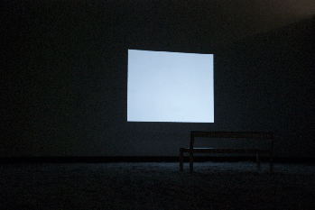

2012-2009
We‘d like to thank the academy Die Arbeit ist eine Choreographie von Elementen des White Cubes und der Black Box. Sie inszeniert ein komplexes Gefecht, welches aus Abstraktionen ausgewählter Raumqualitäten, raumspezifschen Kunstpraxen und dem Agieren der Besucher_innen besteht. Aufgrund dieser prozessualen Komponenten ist es fester Bestandteil des Konzeptes, auf die verschieden Realisierungsorte zu reagieren. We´d like to thank the academy verändert sich somit an jedem Ort, an dem sie stattfndet. Mittels dieser ständigen Transformation werden in der Raumchoreographie folgende Fragen untersucht: Welche konträren und verbindeden Qualitäten besitzen White Cube und Black Box? Ist ein Raum von Ort zu Ort verschiebbar? Kann man den gleichen Raum in Black Box und im White Cube herstellen? Wie viele Räume kann es in einem Ort geben? Ein Raum ist das Resultat von Aktivitäten, die ihn entstehen lassen. Für die Choreographie sind infolgedessen die Handlungen der Besucher_innen konstitutiv. Die Akteure durchlaufen vier verschiedene Stufen, welche das Verhältnis von Theater- und Ausstellungsraum thematisieren. Die folgenden Erläuterungen dienen der Veranschaulichung und besonders die Bewegungen der Besucher_innen, sind exemplarisch zu verstehen. Sie stützen sich auf Beobachtungen der Aufführung in der Galerie der „Hochschule fuer Graphik und Buchkunst Leipzig“ am 01.06.2011. Der White Cube ist allerdings nicht zwingender Spielort. Das Konzept kann ebenso auf die Black Box angewandt werden oder auf kunstferne Räume, die immer eine Defnitionsveränderungen erfahren können, erforderlich sind allein zwei voneinander abgetrennte Raumteile. Die Aufführungsdauer betrug vier Stunden. |

|